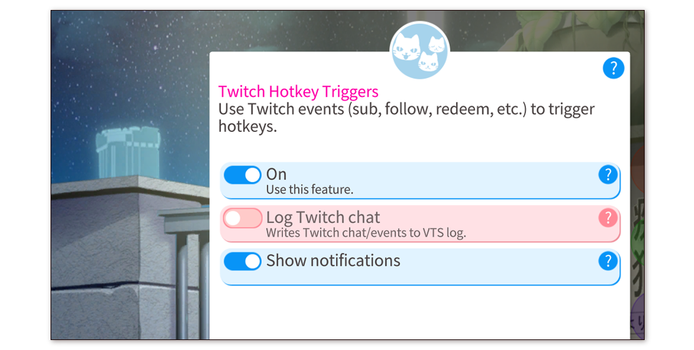
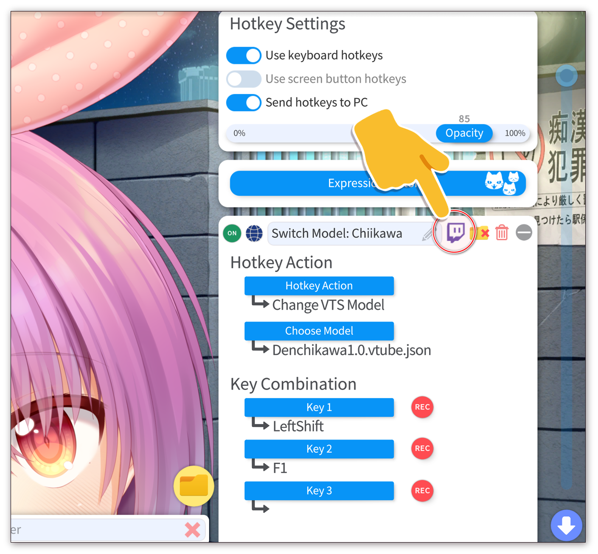
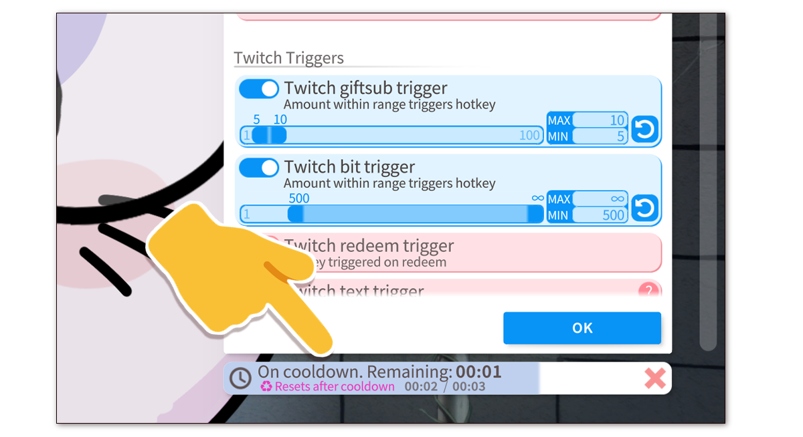

Twitch 快捷键触发
信息¶
Twitch 热键触发器 让你可以使用 Twitch 兑换、聊天命令或新关注者、礼物订阅等事件，轻松直接触发 VTube Studio 热键。
一些使用场景举例：
-
兑换 Twitch 频道积分，可在 10 分钟内自动更改你的模型。
-
使用聊天命令来切换模型上的表情。你还可以限制它们，以便它们只能由你或模组或频道 VIP 等使用。
-
任何超过 100 的 Twitch 捐赠都会打开 Twitch Emote Dropper 一分钟。
-
当用户捐赠5个礼物潜艇时，自动触发 视觉效果预设 10秒。
-
...以及更多!!
有关 VTube Studio Twitch 功能的更多信息，请查看 Twitch 交互 页面。
如果你想使用 Twitch 热键触发器，请确保 VTube Studio 已连接到 Twitch 并完全登录 。另外，请确保该功能已打开。
注意: 此功能还可以让你在 VTube Studio 日志中记录 Twitch 所有 Twitch 聊天和事件，例如订阅、关注等。默认情况下此功能处于关闭状态。如果你的聊天速度非常快，则绝对不应该打开此功能，因为它会影响性能。

为你的快捷键设置 Twitch 触发器¶
要设置 Twitch 热键触发器，请单击热键名称旁边的 Twitch 图标。没有启用的 Twitch 触发器的热键将显示此图标为灰色。
请记住，具有启用的 Twitch 触发器的热键仍然可以通过其键盘组合键正常触发。

在此热键的 Twitch 触发器配置页面上，你可以将其设置为活动/非活动并设置单独的触发器。你可以为一个热键设置多个触发器，因此一个热键可以同时被位和礼品潜艇激活。
右上角的 “测试” 按钮可让你触发热键，就好像它是由配置的 Twitch 事件触发的一样。这实际上会激活热键并触发其冷却（如果你已配置）。唯一的例外是 “加载 VTS 模型” 热键，因为在此配置窗口打开时这些热键会被阻止。

支持的 Twitch 触发器¶
目前支持以下 Twitch 触发器：
-
礼物潜艇
配置范围内的礼物潜艇将触发热键。
-
Twitch 点数
在配置范围内使用的位将触发热键。
-
Twitch 兑换
任何使用配置的通道点兑换的用户都会触发热键。
-
聊天指令 限制
列表中的任何命令（以空格分隔）都将触发热键。
你可以将这些聊天命令限制为某些用户，例如你、VIP、订阅者、模组等，或它们的任意组合。
-
订阅
订阅你的用户将触发热键。
-
关注
关注你的用户将触发热键。
你可以配置一个用户重复关注/取消关注是否会重复触发热键。
-
突袭
袭击（任何规模）将触发热键。
-
喊话
任何在你的频道上获得点赞的用户都会触发热键。
-
广告插播开始
你的频道上开始的广告插播将触发热键。
热键冷却¶
一般来说，如果多次触发 Twitch 触发器，它们的行为就像你手动多次触发热键一样。例如，可以打开/关闭“表情快捷键”。
然而，在许多情况下，仅允许热键打开，然后在固定的冷却时间后自动将其关闭可能是有意义的。例如，你可以进行兑换来切换 挂件场景 ，为你的模型戴上帽子。然后，五分钟后，帽子会自动摘下。
如果你在冷却期间手动切换热键，冷却和自动重置将立即取消。修改热键配置或更改模型也将取消正在进行的冷却。
当你打开 Twitch 触发器配置并且冷却时间处于活动状态时，它将显示在配置的底部。你还可以通过单击取消 ( X ) 图标来取消它。

当你为 Twitch 触发器设置的热键是 “加载 VTS 模型” 热键并且你配置了自动重置的冷却时间时，右上角将显示一条通知，允许你取消挂起的模型加载，该模型加载将切换回来到以前的模型。
如果你不希望显示该通知，请在热键的 Twitch 触发器配置中打开 “隐藏模型加载对话框” 。

 请记住，只要你 使用透明推流（例如使用Spout2（推荐）），该提示将在OBS中不可见，并且不会显示在你的推流画面中。
请记住，只要你 使用透明推流（例如使用Spout2（推荐）），该提示将在OBS中不可见，并且不会显示在你的推流画面中。


自动复位¶
你可以为任何类型的热键设置冷却时间，但只有以下热键类型支持 冷却时间后自动重置:
-
切换表情 (.exp3)
冷却结束后，表情会再次自动关闭。
手动打开/关闭按键表情（由用户或 API）会取消挂起的自动重置。
-
移动模型
冷却结束后，模型将移回 Twitch 触发器触发热键时所在的位置。
在冷却期间手动移动模型（由用户或 API）会取消挂起的自动重置。
-
切换挂件场景
冷却时间结束后， 挂件场景 中所有挂件都将被卸载。
-
加载视觉效果
冷却结束后，将自动再次加载之前的 视觉特效预设 。
手动更改 VFX 值（通过用户或 API）会取消挂起的自动重置。
-
打开/关闭 Twitch 功能
冷却结束后，所选 Twitch 功能将再次关闭。例如，这可用于让用户捐赠以打开 Twitch Emote Dropper 一段时间。
手动切换所选功能会取消挂起的自动重置。
-
更换VTS模型
冷却结束后，前一个模型（触发此热键的模型）将再次加载。
手动更改模型（通过用户或 API）会取消挂起的自动重置。
此外，加载模型将取消已卸载模型的所有待定冷却时间和自动重置。其挂起的自动重置将立即执行，因此当模型再次加载时，使用 Twitch 触发器触发的项目场景或按键表情将不会处于活动状态。